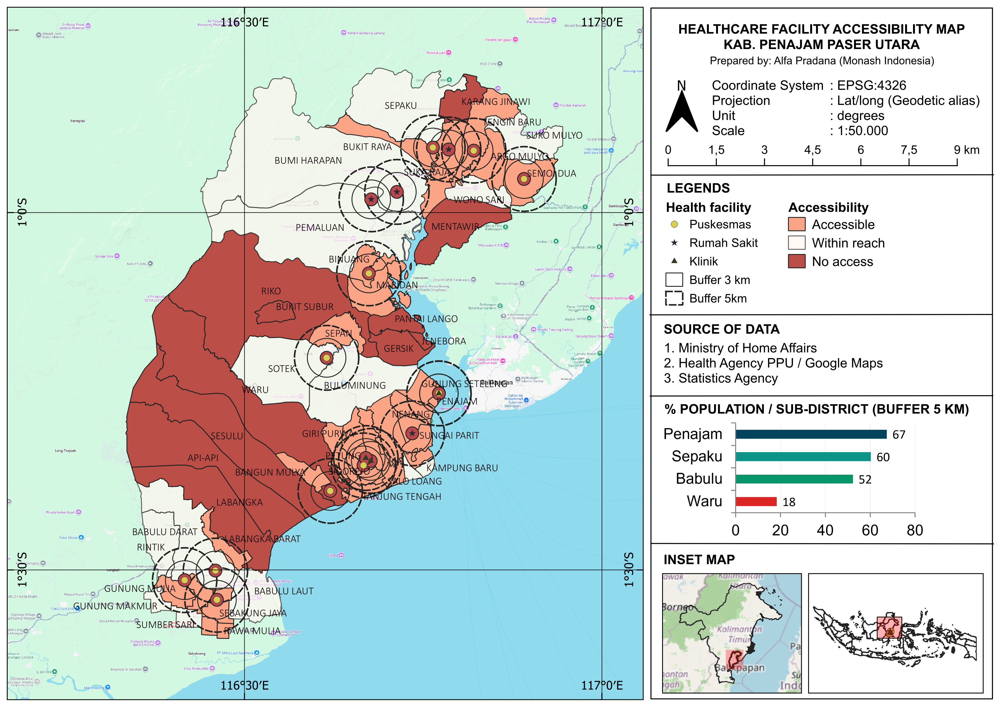

Spatial Analysis of Accessibility to Healthcare Facilities in Penajam Paser Utara
Mapping the Buffer Zone of Indonesia’s New Capital (IKN)
I’ve just completed a spatial analysis project on the accessibility of healthcare facilities in Penajam Paser Utara (PPU) District, East Kalimantan, which serves as the buffer zone for Indonesia’s new capital city, Ibu Kota Nusantara (IKN). The study aimed to evaluate how well the existing healthcare infrastructure meets the needs of the local population, especially in light of the rapid development associated with IKN.
This project is also part of my journey toward the BNSP GIS Analyst Level 6 professional competency certification, where I applied geospatial analysis techniques to real-world public health challenges.
The analysis is fairly straightforward, buffer zones (1/3/5 km) from 18 healthcare facilities, intersected against 54 village boundaries, but the findings deserve attention. Even at 5 km radius, ~42% of population still lacks access to a healthcare facility, with Waru sub-district being the most critical area (18.3% coverage) and several coastal villages in Penajam having 0% coverage.
Penajam Paser Utara (PPU) District, East Kalimantan — the buffer zone of Ibu Kota Nusantara (IKN)
18
Fasilitas Kesehatan
54
Desa / Kelurahan
202,067
Jiwa Penduduk
57.7%
Terjangkau (5 km)
Background
Accessibility of Healthcare Facilities — The distance to healthcare facilities (HF) is a key factor in the uptake of services. Remote areas are at high risk of delays in medical treatment.
Context of IKN — PPU is a district that supports IKN. The rapid increase in the labor force and infrastructure development requires a well-planned healthcare system.
Significance of GIS — Spatial analysis can quantitatively identify gaps in health care coverage, supporting evidence-based planning.
What percentage of PPU’s population has access to health facilities within a 1/3/5 km radius, and which villages are in the most critical condition?
Aims & Data
Project Aims
- To map the location of 18 healthcare facilities across 4 sub-districts (kecamatan) in PPU
- To analyse service coverage with 1/3/5 km buffers
- To identify villages or sub-districts without access to healthcare facilities
- To estimate the population both within and outside the coverage area
- To formulate priority recommendations for the development of new healthcare facilities
Source of Data
| Data | Source | Format |
|---|---|---|
| PPU boundaries | Ministry of Home Affairs | SHP |
| Healthcare facilities (n=18) | Health Agency PPU / Google Maps | CSV → SHP |
| Population Data | Statistics Agency, PPU District | Table (join) |
| Basemap | XYZ Tiles (ESRI) | Raster |
| Projection System | UTM Zone 50S (EPSG:32750) | — |
Project Workflow
- Input Data — PPU boundaries (54 polygons, UTM 50S), facility locations (18 points verified), population data (202,067 people)
- Preprocessing — Reproject (WGS84 → UTM 50S), geometric validation (topology checking & CRS), join attribute (population → boundaries)
- Geoprocessing — Buffer (1 km / 3 km / 5 km), dissolve buffer (remove overlap), intersect (buffer ∩ boundaries), proportion & classification (% area & population estimation)
- Output — Accessibility layer (.shp, open in QGIS), statistics (.csv, 54 villages), report
Accessibility Map

Results: Population Coverage by Buffer Radius
| Buffer | Population Covered | Coverage |
|---|---|---|
| 1 km | 13,201 people | 6.5% · 0 villages accessible |
| 3 km | 66,280 people | 32.8% · 10 villages accessible |
| 5 km | 116,567 people | 57.7% · 29 villages accessible |
Priority Villages: Not Within a 5 km Radius
| Sub-district | Village | Population | Cov. 5km (%) | Notes |
|---|---|---|---|---|
| Waru | Waru | 9,871 | 8.6% | The largest population, has only 1 HF |
| Waru | Sesulu | 4,142 | 9.3% | The isolated southern region |
| Babulu | Labangka | 4,021 | 1.6% | A vast area, away from Babulu HF |
| Penajam | Jenebora | 3,475 | 0.0% | Coastal — 0% (no access) |
| Penajam | Gersik | 2,690 | 0.0% | Coastal — 0% (no access) |
| Waru | Api-Api | 2,505 | 0.0% | Coastal — 0% (no access) |
| Penajam | Riko | 2,247 | 2.0% | Blocked by the terrain |
| Penajam | Pantai Lango | 2,073 | 0.0% | Coastal — 0% (no access) |
| Sepaku | Karang Jinawi | 1,198 | 6.3% | Border, remote area |
| Penajam | Bukit Subur | 982 | 0.0% | 0% — an isolated hill |
| Sepaku | Mentawir | 802 | 0.0% | The coast of Makassar Strait |
⚠ Total: 34,006 people (16.8% of the total PPU population) don’t have access to healthcare facilities within a 5 km radius.
Analysis & Recommendations
01 — Waru Sub-district: CRITICAL
Only 18.3% of the population is covered, even within a 5 km radius. The single Waru Community Health Centre is insufficient to serve 21,412 people across four villages. The top priority is the construction of new healthcare facilities, particularly in the villages of Sesulu & Api-Api.
02 — Remote Coastal Areas
The villages of Jenebora, Pantai Lango, Gersik (Penajam Sub-district) and Api-Api (Waru Sub-district) have 0% coverage. The nature of the coastal environment requires a specialised approach: mobile health centres or floating clinics.
03 — Momentum IKN
The development of Sepaku District General Hospital and new healthcare facilities in Sepaku Sub-district for IKN workers has the potential to improve coverage in the villages surrounding the authority’s area. Synergy in the planning of public facilities is crucial.
04 — Database for Planning
This accessibility dataset can serve as input for the PPU District Community Health Centre Master Plan. Further MCDA (multi-criteria decision analysis of land suitability) spatial analysis will help to identify the optimal locations for new healthcare facilities.
Conclusion
- The 18 healthcare facilities are unevenly distributed: Penajam has the most, whilst Waru has the fewest (one community health centre for every four villages).
- Within a 5 km radius: 57.7% of the population (116,567 people) is covered. There are still 11 villages (34,006 people) that are not covered.
- Waru sub-district is the most critical area (18.3%), followed by the coastal villages in Penajam, which have 0% coverage.
- The momentum of the IKN development must be harnessed to ensure the equitable distribution of healthcare facilities in PPU in a planned manner based on spatial data.
- Buffer and intersection-based analysis has proven effective for quantifying access to healthcare services at the village level.
Bootcamp QGIS SKKNI · Prepared by Alfa Nugraha Pradana